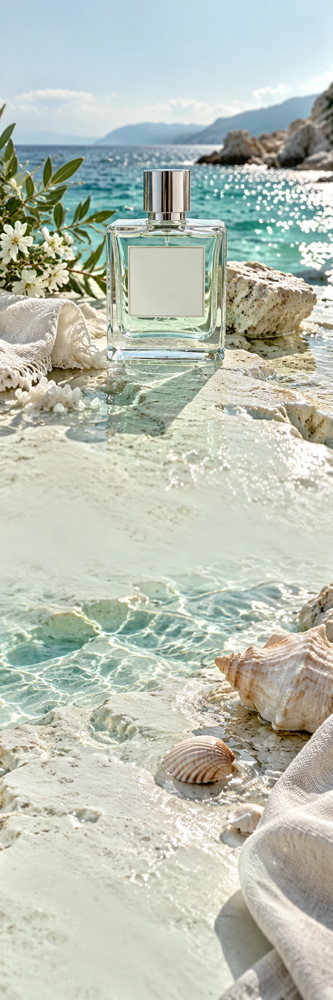

SEL D’AZUR
ParfumZomercampagne
A MEMORY OF THE COAST
De zee.
Nog even dichtbij.
Zout op je huid. Nergens haast. Een herinnering om te dragen.
Een minerale opening ontmoet zachte iris en licht hout. Sel d’Azur vangt het stille moment tussen de laatste duik en de eerste avondwind.
Ontdek Sel d’AzurNeem het
getij mee.
Zout op je huid. Nergens haast. Een herinnering om te dragen.
Ontdek Sel d’Azur